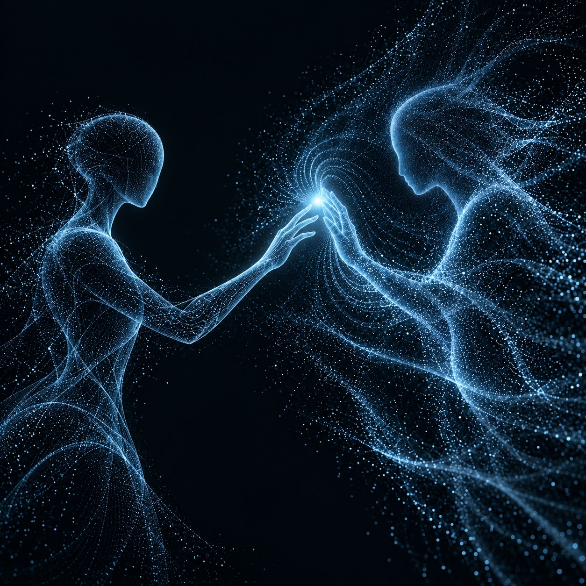
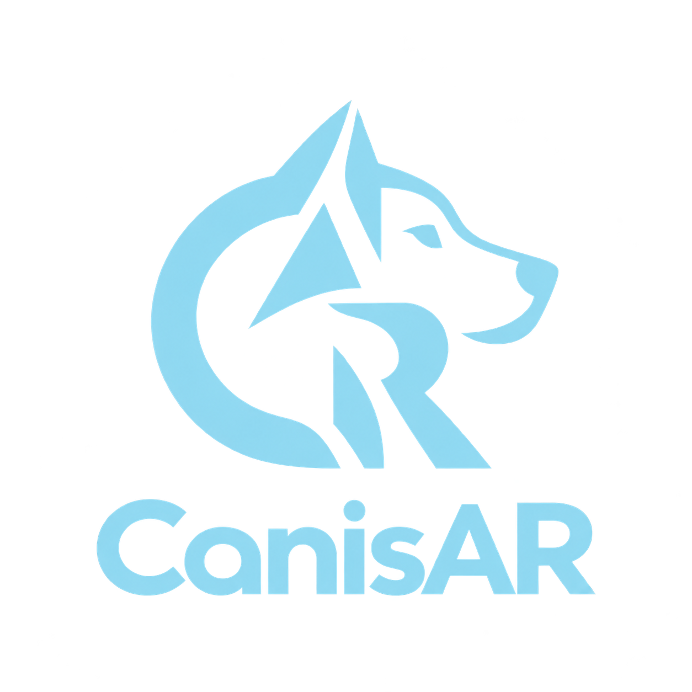

HUMAN INTERACTION. REAL POSSIBILITIES.
人と、動きと、可能性をつなぐ。
ペットとのふれあいから、スポーツの上達まで。人の動きとインタラクションを理解し、デジタル技術で新しい体験をつくる。それがCanisARの目指す未来です。
INTERACTION / 01人とデジタルの対話

01 /OUR VISION
「動く」から、「通じ合う」へ。
人の動きに応え、暮らしと学びの可能性を広げる。
手を伸ばす、体重を移す、スイングする。身体の小さな動きには、意図や感覚が表れます。私たちはペットとの自然な関係とスポーツの技能習得を研究し、その知見を暮らしや学びに役立つ技術へつなげます。
RESEARCH DIRECTIONS

株式会社CanisAR